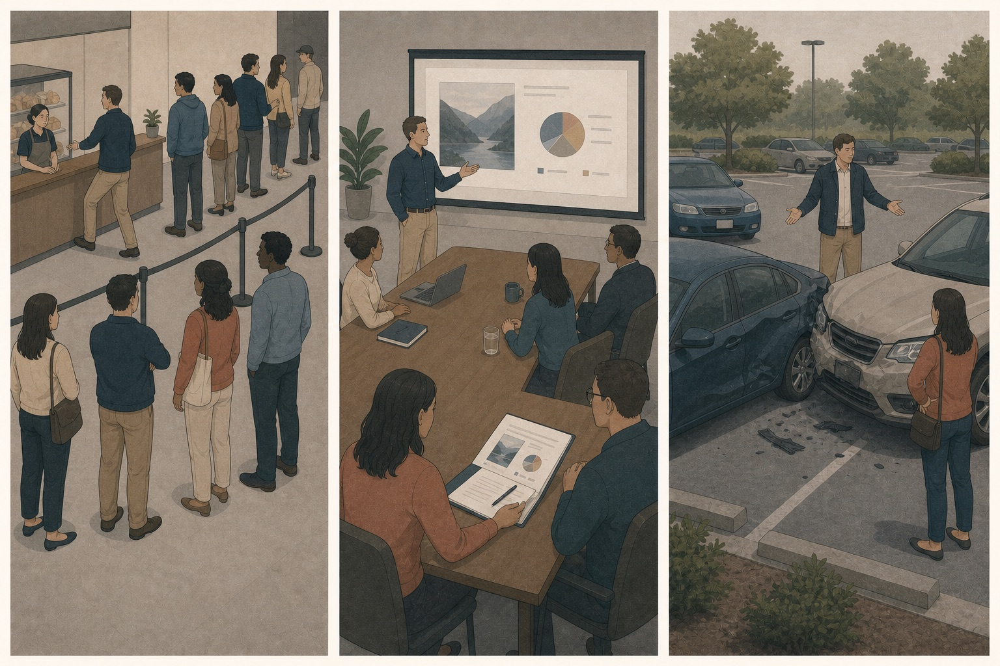
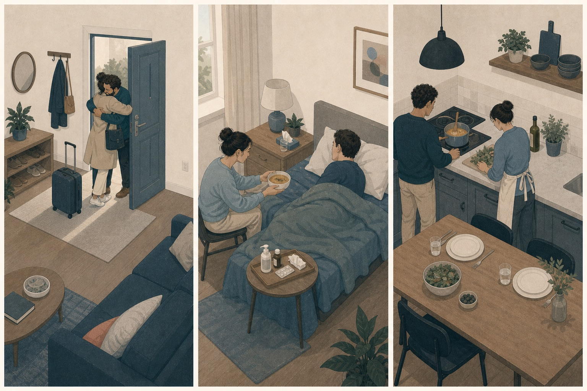
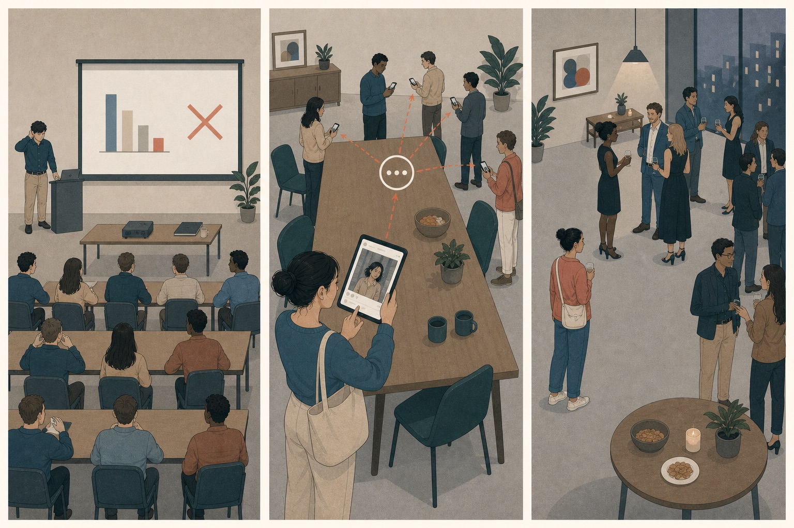
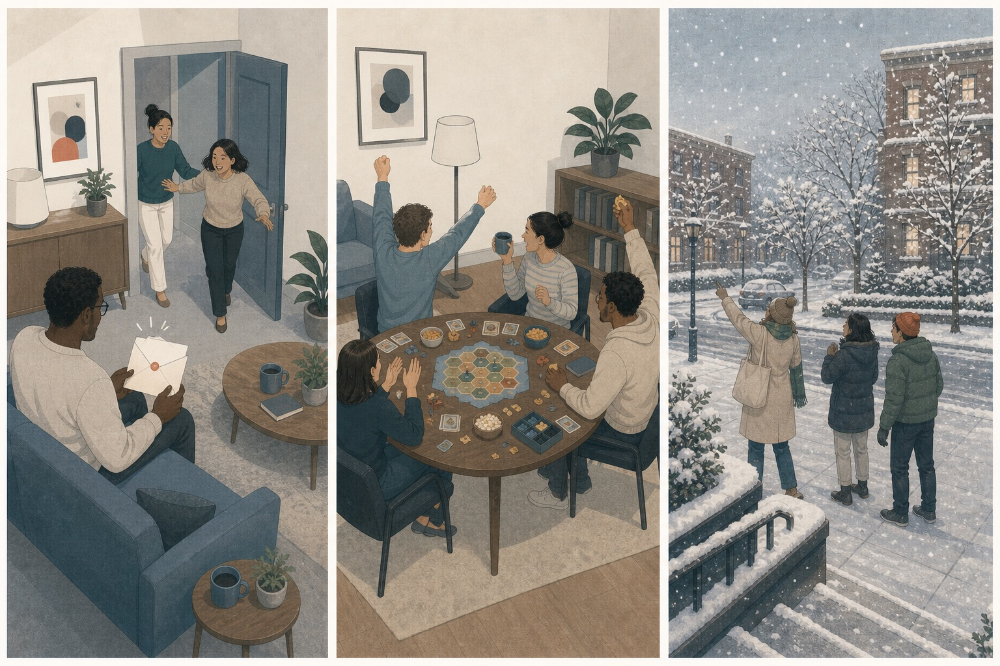

重要的人回到家，你想靠近他、听他说话，也想知道他是否需要照顾。
先判断，再展开
爱。对象是一个珍视的人和关系，行动方向是靠近、关心与维持联结。
DAY 05 · DIFFERENTIATE / EXPLAIN / TRANSFER
最后一天不再添加新词。你会用评价对象、时间位置、参照点和行动方向，把十二种情绪放进同一张判断地图，再用没有见过的情境检验能否迁移。
CLOSED-BOOK RECALL
同样都是“感觉很好”，先指出它指向重要关系、正在发生的好事，还是已经达到的期待。
爱。对象是一个珍视的人和关系，行动方向是靠近、关心与维持联结。
喜悦。眼前新增了一件值得体验和分享的好事，并不需要先有明确标准。
满足。现实结果与先前期待和标准相符，注意力转向确认与收尾。
珍视关系 → 爱；好事发生 → 喜悦；期待或标准达到 → 满足。
FIVE-DAY MAP
课程位置只表示已经接触过概念。真正的检验，是能否在新情境里用自己的话说明依据。
建立三种负面原型。
用近邻比较提高粒度。
分开评价对象与责任。
辨认正向感受的来源。
开放检索，不背固定答案。
SEQUENCES · NOT SINGLE LABELS
下面不是测试分数，而是观察同一段经历如何因信息变化而切换情绪。
分别判断三个时刻，0＝几乎没有 · 6＝非常强
威胁从不确定变为明确，再被解除。不是三种互斥性格，而是事件信息和时间位置发生了变化。
分别判断三个评价对象
愤怒评价他人的越界，内疚评价自己的具体伤害，羞耻则把评价扩展到整个自己。
允许三种正向情绪同时存在
人和关系、意外好事、达标结果是三个不同对象，因此不必删掉其中任何一种真实体验。
VISUAL RECALL ATLAS
图谱直接复用前四天已经看过的三联画。先看场景回忆，再读问题，不重新背长定义。







FOUR DECISION AXES
这不是机械分类表，而是把注意力从“我感觉很糟/很好”带回具体评价。
是危险、越界、污染、失去、缺少联结、被评价，还是好事与达标？
先描述摄像机能拍到的事件我在评价外部威胁、他人行为、自己的行为、整个自我、关系，还是结果？
同一事件可以有多个对象坏事只是可能、已经明确、已经发生，还是终于结束？好事正在出现还是已达标准？
时间位置能区分近邻我最想逃开、制止、排除、哀悼、寻找联结、躲藏、修复、放松、照料、分享还是收尾？行动倾向是线索，不是必须执行的命令。
SIX HIGH-VALUE DISTINCTIONS
先说依据再揭晓。每组都允许并存，区别只在突出对象。
能指出具体威胁、来源或伤害，保护行动可以直接针对它。
知道可能出问题，却不知道是什么、何时或多严重。
能具体指出更接近恐惧；只能扫描线索与可能性更接近焦虑。
认为有人做错且应负责，希望制止、说明规则或追责。
认为对象污染、腐坏或令人反感，希望排除、清洁或切断。
纠正对方与局面更接近愤怒；让对象远离边界更接近厌恶。
现实低于过去，核心是丧失与无法恢复原样。
现实低于联结需要，核心是缺少被看见、理解、接纳或陪伴。
哀悼已经失去更接近悲伤；仍在寻找需要的联结更接近孤独。
评价扩展到整个自我和他人眼中的形象，容易想隐藏或退出。
评价停在具体行为、影响、责任和可采取的修复。
能缩回一件可修正的事更接近内疚；整个自己被判坏更接近羞耻。
正向变化依赖先前担忧、危险或压力已经解除。
现实新增一件值得欢迎、体验或分享的好事。
解除负面过程更接近宽慰；新增好事件更接近喜悦。
不要求事先存在明确标准，意外美景和玩耍也能触发。
需要先有期待、承诺或标准，再确认现实与之相符。
能指出先前标准更接近满足；只需指出眼前好事更接近喜悦。
ONE EVENT · MANY OBJECTS
汇报前，你不知道评审会问什么；现场同事故意把你的贡献说成自己的。你反驳时误伤了支持你的伙伴，又担心所有人会觉得自己能力差。最终贡献被澄清，报告达到预期标准，重要伙伴仍留下来陪你。
评审未知指向焦虑；同事越界指向愤怒；误伤伙伴指向内疚；整体形象被否定指向羞耻。
贡献澄清让威胁解除，出现宽慰；报告达到标准带来满足；重要关系仍被珍视，爱可以贯穿其中。
“我对评审未知而焦虑，对越界而愤怒，对伤害伙伴而内疚……”比“我很乱”更可理解。
粒度不是把体验切成互不相干的盒子，而是让混合情绪各自说清楚自己在评价什么。
FINAL CLOSED-BOOK RETRIEVAL
完成条件不是猜中词，而是能说出评价对象、时间位置或行动方向。
夜里听到屋外持续异响，但不知道来自人、动物还是风；打开灯后看见有人正在撬门。
最初威胁存在但内容不明；看见明确来源后，保护行动可以直接指向具体危险。
你发现共享冰箱里的食物腐坏并流到自己的餐盒上，同时知道是室友多次无视清理约定。
污染物需要排除和清洁；室友明知约定仍越界，则产生纠正与追责。
好友搬去很远的城市。你为共同生活结束而难过，也在新的日常里缺少能说心里话的人。
旧日相处已经失去指向悲伤；当前需要的深层联结不足指向孤独。
你忘记重要约定，让对方等了很久；之后既想补偿，又反复认定自己根本不值得信任。
补偿具体伤害属于内疚；把一次失约扩展成整个自我判决属于羞耻。
检查结果排除了最担心的问题，同时医生又告诉你恢复速度比预期更好。
坏结果未发生是宽慰；新增好消息是喜悦；恢复达到或超过标准则带来满足。
重要的人陪你完成一项长期计划。你珍惜他的存在，也确认结果达标，并为当天意外出现的小惊喜兴奋。
关系本身指向爱，达标结果指向满足，意外好事指向喜悦。
TRANSFER WITHOUT A WORD LIST
不要求每天记录，也不要求当场找出完美词语。先让体验从笼统变得可描述。
先说具体事件，不把推测当事实。
“对方说我们明天谈”，而不是“他一定要否定我”。
是危险、越界、污染、失去、缺少联结、责任、整体自我，还是好事与达标？
保护、纠正、清除、哀悼、寻找联结、隐藏、修复、放松、靠近、分享或收尾，都能提供线索。
每个词补一个对象；不确定时先用“可能更接近”，等信息变化后再重新命名。
情绪词是当前解释，不是终身结论，也不是必须执行的命令。
WHAT COUNTS AS LEARNING
不是把十二个定义一字不差背出，而是在新情境里找出有区分力的线索，并能在信息变化后修正。
DAY 05 · TAKEAWAYS
当你能把“我很难受”或“我很开心”继续说成一个具体判断，情绪粒度就已经开始进入真实生活。
RESEARCH BASIS
第五天沿用原研究“先学概念、再集中比较”的结构，但改成适合个人阅读与迁移的开放检索。
原始研究在前四天逐个学习十二种情绪，第五天集中比较；本页沿用这一学习顺序。
情绪粒度关注在相近体验之间发现细微差异，并承认复杂词语和文化边界。
评价理论说明：相同刺激可以因个人关切、目标和判断不同而引发不同情绪。
综述情绪区分的定义、测量方式、潜在价值与仍未解决的问题。
这是阅读式情绪识别训练，不用于诊断、治疗或评定人格。十二个词不是全部情绪，也不是跨文化固定不变的自然盒子；页面中的判断轴是便于学习的原型。情绪可以提示关注点，但不能替代事实核对、责任判断、医学评估或关系安全判断。